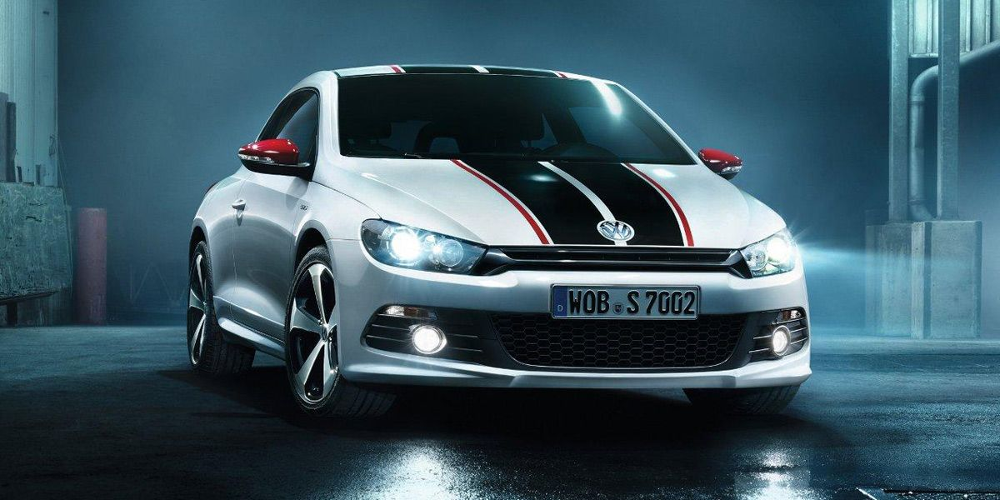
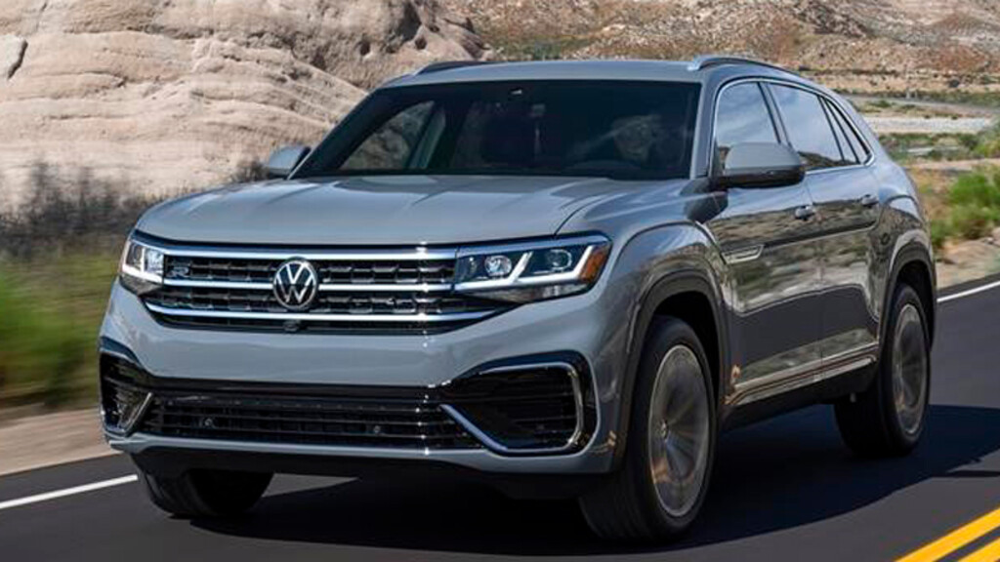
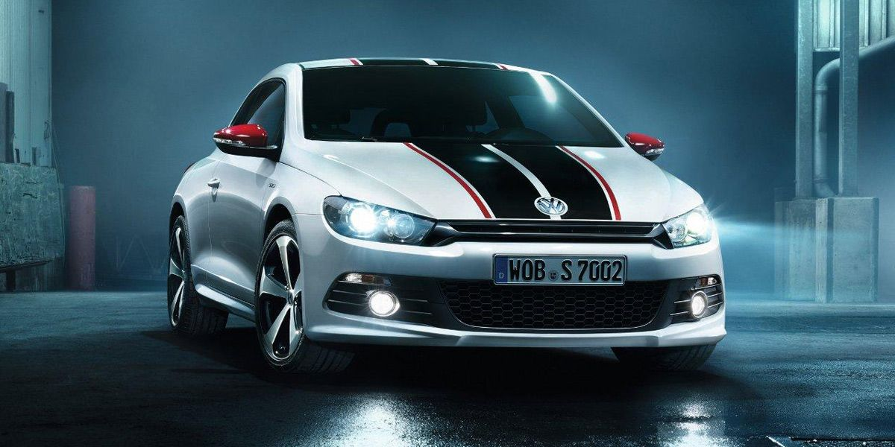
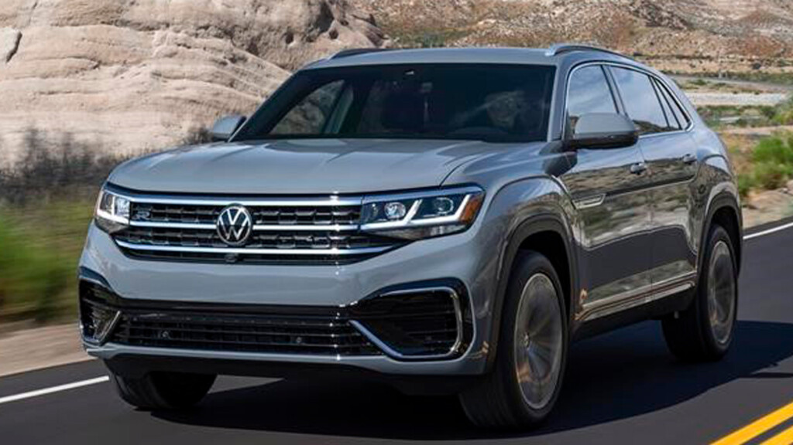

El nuevo motor de 2.0 litros con inyección directa turboalimentada TSI® del Golf GTI tiene 241 caballos de fuerza y 273 lb-pie de torque, lo que lo convierte en el GTI más potente de la historia. También es el GTI más ágil de la historia.
El Volkswagen Scirocco GTS parte de la base técnica de las opciones más deportivas actuales exceptuando los brutales R, es decir, equipa el motor 2.0 turbo de gasolina de inyección directa y 220 CV de potencia. Gracias a él es capaz de alcanzar una velocidad máxima de 246 km/h y pasar de 0 a 100 km/h en 6,5 segundos.
El Volkswagen Touareg se ofrece con versiones gasolina, diésel e híbridas enchufables. El motor gasolina se trata de un V6 TSI de 340 CV con 450 Nm y un 0 a 100 km/h de 5.9 segundos. Por otra parte, existe un motor V6 TDI, con dos niveles de potencia: 231 CV o 286 CV.